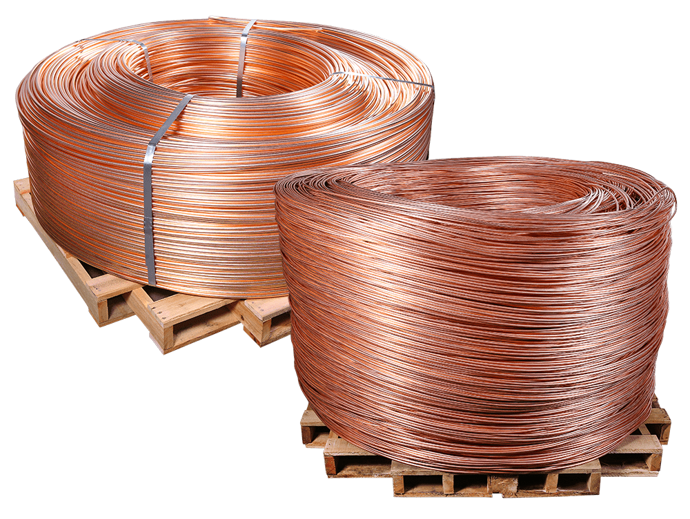
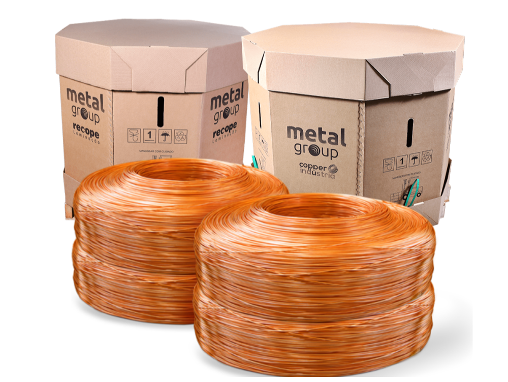

Nosso principais produtos
Vergalhão de Cobre
O vergalhão de cobre é um produto robusto e versátil, amplamente utilizado em aplicações elétricas devido à sua excelente condutividade.
Fabricado com cobre de alta qualidade, garante máxima eficiência e durabilidade. Ideal para projetos que demandam resistência à corrosão e performance
elétrica superior. Escolha perfeita para quem busca qualidade e confiabilidade em suas instalações.

Fios de Cobre
Nossos fios de cobre são sinônimos de precisão e qualidade superior. Projetados para assegurar máxima condutividade elétrica e resistência à corrosão, são ideais para uma variedade de aplicações que demandam eficiência e durabilidade. Fabricados sob rigorosos padrões, representam a escolha perfeita para projetos que buscam confiabilidade e desempenho constante. Seja para instalações industriais ou trabalhos especializados, esses fios garantem um resultado à altura de suas expectativas..
